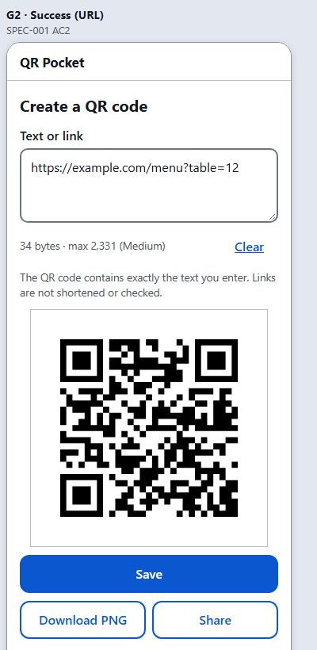
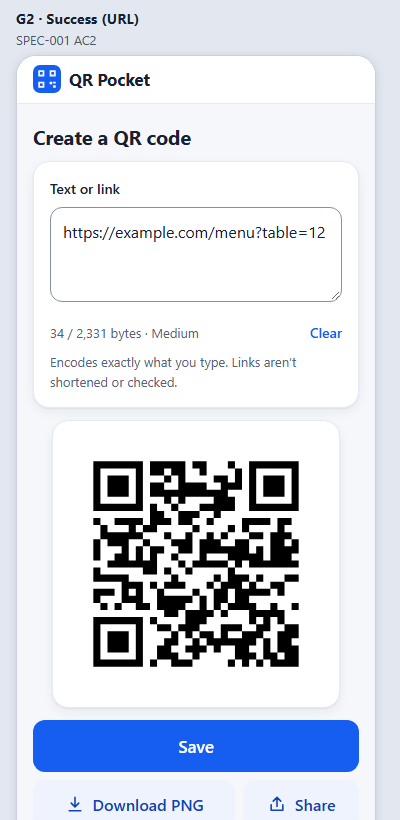
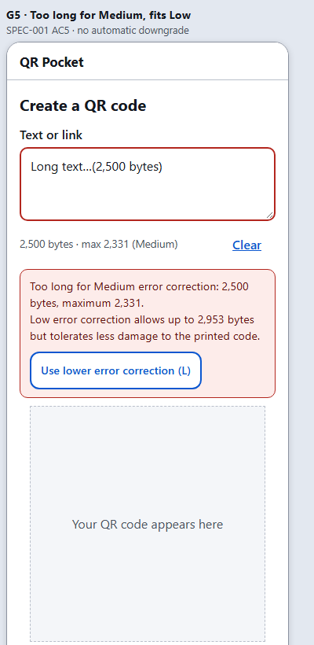
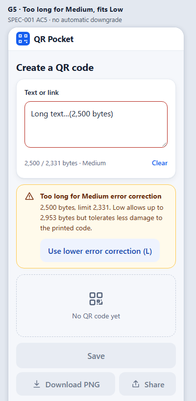
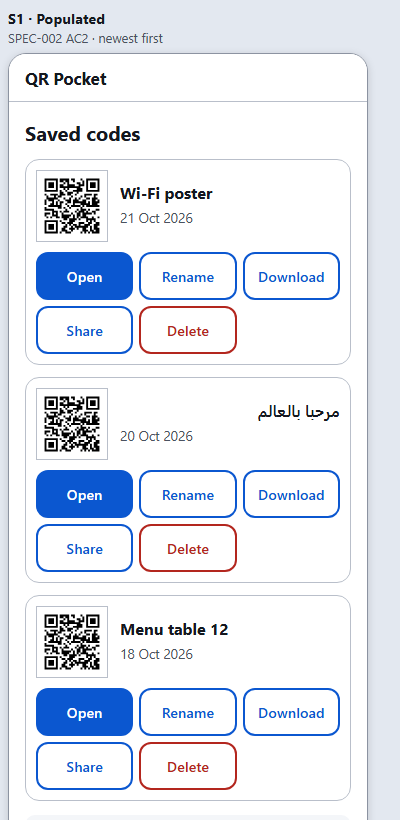
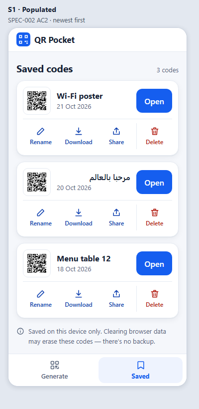
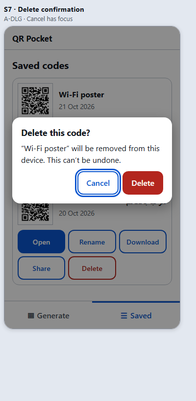
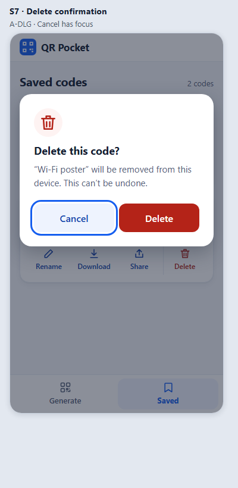

QR Pocket — Phase 1 visual refinement: before / after
Screenshots of the static mockups rendered in Microsoft Edge (headless) on 2026-10-21. “Before” is v1 (v1/index.html); “after” is v2 (index.html). Frame IDs are unchanged. QR images are placeholders. These are visual comparisons only — not product tests.
Generate — G2 success (URL)


Generate — G5 too long for Medium (explicit Low option)


Saved — S1 populated


Dialog — S7 delete confirmation

